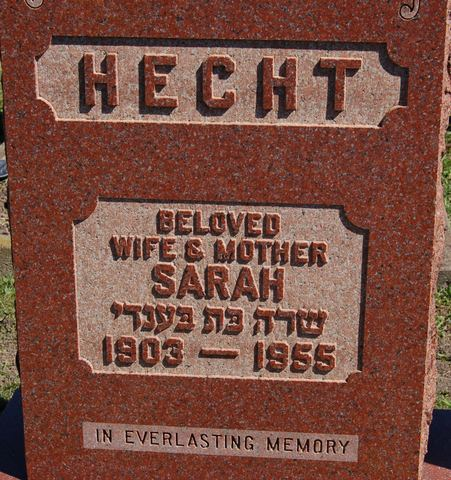

Sarah Miller
1897–1955
Life events
| Born | 1897 |
|---|---|
| Arrival | 1921 |
| Married | 22 Oct 1922 · Jacob Hecht · Cuyahoga County, Ohio Map  |
| Lived | 1930 · 3532 East 163rd St, Cleveland, Ohio Map · Marital Status: Married; Relation to Head: Wife |
| Lived | 1940 · 3351 Glencarin Rd, Shaker Heights, Ohio Map · Marital Status: married relation to Head: Wife |
| Died | 26 Mar 1955 · Cleveland, Ohio Map |
| Buried | 28 Mar 1955 · Mt. Olive Cemetery, Solon, Ohio Map  |
Family
Sarah Miller1897–1955

Jacob Hecht1896–1988
Photos
Jacob Hecht
Sarah Miller

Joseph Elliot Hecht
Anna Rubinoff
Jacob Hecht
Sarah Miller

Jacob Hecht
Sarah Miller

Sarah Miller
Joseph Elliot Hecht
Clara Hecht
Charles Bodek
Sadie Hecht
Anna Rubinoff
Aron Altchouler
+3 more